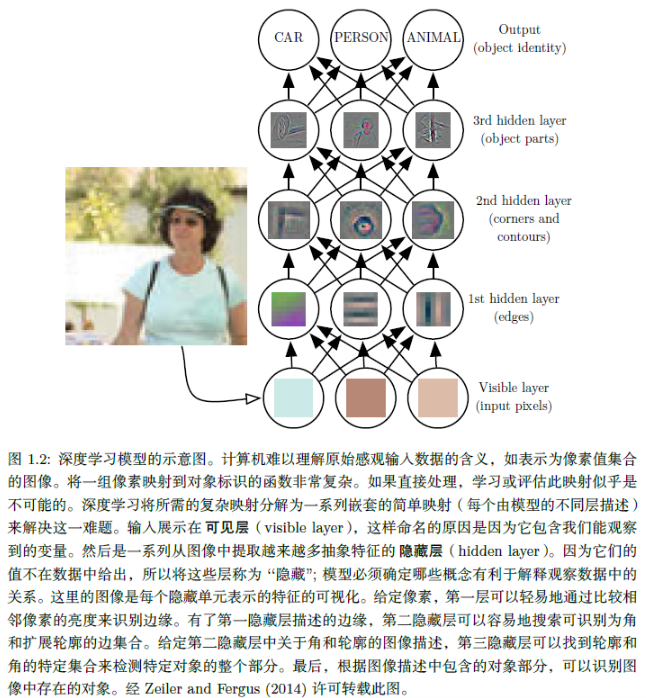
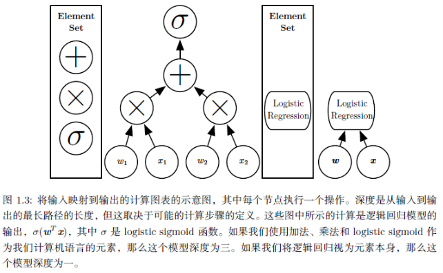
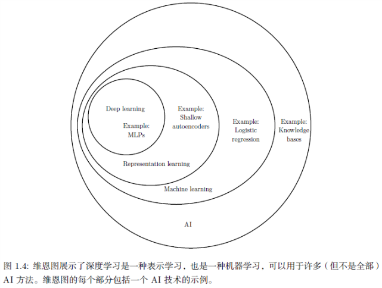
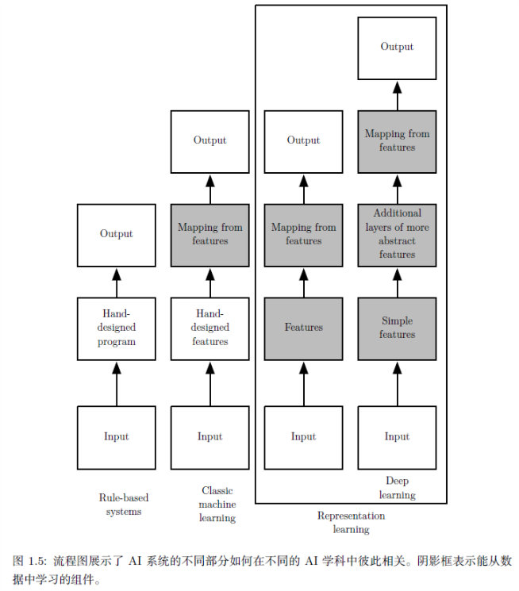

题记：君子生非异也，善假于物也。
表示学习(representation learning)
对于许多任务来说，我们很难知道应该提取哪些特征。例如我们想要编写一个程序来检测照片中的车，在这个任务重就会有很多的变差因素(factors of variation)来干扰我们辨识。例如，落在车上的阴影，车身金属零件的反光，路边的树遮挡住了车身的一部分等等。
解决这个问题的途径之一就是使用机器学习来发掘表示本身，而不是仅仅把表示映射到输出。这种方法我们称之为表示学习(representation learning)。学习到的表示往往比手动设计的表示表现的更好。并且它们只需最少的人工干预,就能让AI系统迅速适应新的任务。表示学习算法只需几分钟就可以为简单的任务发现一个很好的特征集,对于复杂任务则需要几小时到几个月。手动为一个复杂的任务设计特征需要耗费大量的人工时间和精力;甚至需要花费整个社群研究人员几十年的时间。
表示学习算法的典型例子是自编码器(autoencoder)。自编码器由一个编码器(encoder)函数和一个解码器(decoder)函数组合而成。编码器函数将输入数据转换为一种不同的表示，而解码器函数则将这个新的表示转换到原来的形式。我们期望当输入数据经过编码器和解码器之后尽可能多的保留信息，同事希望新的表示有各种好的性能，这也是自编码器的训练目标。为了实现不同的特性，我们可以设计不同形式的自编码器。
当设计特征或设计用于学习特征的算法时，我们的目标通常是分离出能解释观察数据的变差因素。在此背景下，“因素”这个词仅能指代影响的不同来源；因素通常不是乘性组合。这些因素通常是不能被直接观察到的量。为了对观察到的数据提供有用的简化解释或推断其原因,它们还可能以概念的形式存在于人类的思维中。它们可以被看作数据的概念或者抽象,帮助我们了解这些数据的丰富多样性。当分析语音记录时,变差因素包括说话者的年龄、性别、他们的口音和他们正在说的词语。当分析汽车的图像时,变差因素包括汽车的位置、它的颜色、太阳的角度和亮度。
从原始数据中提取高层次，抽象的特征是非常困难的。许多诸如说话口音这样的变差因素，只能通过对数据进行复杂的、接近人类水平的理解来辨识。这几乎与获得原问题的表示一样困难，因此，乍一看，表示学习似乎并不能帮助我们。
深度学习
深度学习(deep learning)通过其他较简单的表示来表达复杂表示，解决了表示学习中的核心问题。PS：深度学习是表示学习的一部分。

深度学习让计算机通过较简单概念构建复杂的概念。深度学习模型的典型例子是前馈深度网络或多层感知机(multilayer perceptron, MLP)。多层感知机仅仅是一个将一组输入值映射到输出值的数学函数。该函数由许多较简单的函数复合而成。我们可以认为不同数学函数的每一次应用都为输入提供了新的表示。

学习数据的正确表示的想法是解释深度学习的一个视角。另一个视角是深度促使计算机学习一个多步骤的计算机程序。 每一层表示都可以被认为是并行执行另一组指令之后计算机的存储器状态。更深的网络可以按顺序执行更多的指令。
目前主要有两种度量模型深度的方式。
- 第一种方式是基于评估架构所需执行的顺序指令的数目。
- 另一种是在深度概率模型中使用的方法，它不是将计算图的深度视为模型深度，而是将描述概念彼此如何关联的图的深度视为模型深度。在这种情况下，计算每个概念表示的计算流程图的深度可能比概念本身的图更深。（？）

